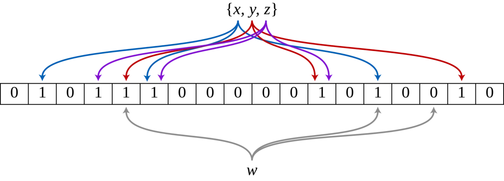

形而上者谓之道；形而下者谓之器。（《周易·系辞上》）
形而上者谓之道；形而下者谓之器。（《周易·系辞上》）
布隆过滤器
概念
布隆过滤器是一种空间利用率较高的概率型数据结构，用来测试一个元素是否在集合中。但是存在一定可能，导致结果误判。当布隆过滤器说某个值存在时，这个值可能不存在；当它说不存在时，那就肯定不存在.
特性：
- 与哈希表不同，布隆过滤器是一个大小固定的过滤器；
- 随着元素的增多，错误率逐渐上升；
- 不能删除其中的元素。
更多内容看–原理部分。
Mac 配置
第一步
下载布隆过滤器：地址
# git clone |
第二步
更改 redis 配置文件
# brew 查看redis相关配置 |
配置文件地址：/usr/local/etc/redis.conf;
|
重启 redis
# 重启reis |
基本操作
| 命令 | 功能 | 参数 |
| BF.RESERVE | 创建一个大小为 capacity，错误率为 error_rate 的空的 Bloom | BF.RESERVE {key} {error_rate} {capacity} [EXPANSION expansion 满后默认扩容2倍] [NONSCALING 不扩容抛异常] |
| BF.ADD | 向 key 指定的 Bloom 中添加一个元素 item | BF.ADD {key} {item} |
| BF.MADD | 向 key 指定的 Bloom 中添加多个元素 | BF.MADD {key} {item} [item…] |
| BF.INSERT | 向 key 指定的 Bloom 中添加多个元素，添加时可以指定大小和错误率，且可以控制在 Bloom 不存在的时候是否自动创建 | BF.INSERT {key} [CAPACITY {cap}] [ERROR {error}] [EXPANSION expansion] [NOCREATE] [NONSCALING] ITEMS {item…} |
| BF.EXISTS | 检查一个元素是否可能存在于 key 指定的 Bloom 中 | BF.EXISTS {key} {item} |
| BF.MEXISTS | 同时检查多个元素是否可能存在于 key 指定的 Bloom 中 | BF.MEXISTS {key} {item} [item…] |
| BF.SCANDUMP | 对 Bloom 进行增量持久化操作 | BF.SCANDUMP {key} {iter} |
| BF.LOADCHUNK | 加载 SCANDUMP 持久化的 Bloom 数据 | BF.LOADCHUNK {key} {iter} {data} |
| BF.INFO | 查询 key 指定的 Bloom 的信息 | BF.INFO {key} |
| BF.DEBUG | 查看 BloomFilter 的内部详细信息（如每层的元素个数、错误率等） BF.DEBUG {key} |
# 初始化一个 错误率为 0.1 容量为 5 不自动扩容的 |
原理
工作方式
布隆过滤器是由一个长度为m比特的位数组与k个哈希函数组成的数据结构。比特数组均初始化为0，所有哈希函数都可以分别把输入数据尽量均匀地散列。
- 当插入一个元素时，将其数据
通过k个哈希函数转换成k个哈希值，这k个哈希值将作为比特数组的下标，并将数组中的对应下标的值置为1。 - 当查询一个元素时，同样会将其数据通过k个哈希函数转换成k个哈希值（数组下标），查询数组中对应下标的值，如果有一个下标的值为0表明该元素一定不在集合中，如果全部下标的值都为1，表明该元素有可能在集合中。
至于为什么有可能在集合中？因为有可能某个或者多个下标的值为 1 是受到其他元素的影响，这就是所谓的假阳性，下文会详细讲述。 - 无法删除一个元素，为什么呢？因为你删除的元素的哈希值可能和集合中的某个元素的哈希值有相同的，一旦删除了这个元素会导致
其他的元素也被删除。
下图示出一个m=18, k=3的布隆过滤器示例。集合中的 x、y、z 三个元素通过 3 个不同的哈希函数散列到位数组中。当查询元素 w 时，因为有一个比特为 0，因此 w 不在该集合中。
假阳性相关更多参考： 大白话布隆过滤器，又能和面试官扯皮了！！！
简单来说，当位数组中1的个数越多，也就是存的数据越多，最后查询的时候返回存在的概率越大。
注意⚠️：仅此标记hash过后的位置，而不是存真实的数据。所以才节省空间。
空间占用估计
布隆过滤器有两个参数
- 预计元素的数量 n
- 错误率 f。
公式根据这两个输入得到两个输出，第一个输出是位数组的长度 l，也就是需要的存储空间大小 (bit)，第二个输出是 hash 函数的最佳数量 k。hash 函数的数量也会直接影响到错误率，最佳的数量会有最低的错误率。
k=0.7*(l/n) # 约等于 |
从公式中可以看出
- 位数组相对越长 (l/n)，错误率 f 越低，这个和直观上理解是一致的
- 位数组相对越长 (l/n)，hash 函数需要的最佳数量也越多，影响计算效率
- 当一个元素平均需要 1 个字节 (8bit) 的指纹空间时 (l/n=8)，错误率大约为 2%
- 错误率为 10%，一个元素需要的平均指纹空间为 4.792 个 bit，大约为 5bit
- 错误率为 1%，一个元素需要的平均指纹空间为 9.585 个 bit，大约为 10bit
- 错误率为 0.1%，一个元素需要的平均指纹空间为 14.377 个 bit，大约为 15bit
|||
|–|–|–|
|错误率{error_rate}|元素数量{capacity}|占用内存（单位M）|
| 0.001| 10万 | 0.19|
|0.001| 1百万| 1.89|
|0.001| 1千万| 18.9|
|0.001| 1亿| 188.6|
|0.0001| 10万| 0.25|
|0.0001|1百万|2.5|
|0.0001|1千万|24.6|
|0.0001|1亿|245.7|
|0.00001|10万|0.3|
|0.00001|1百万|3.01|
|0.00001|1千万3|0.1|
|0.00001|1亿|302.9|
占用内存（单位M） = bytes值/1024/1024。
从上述对比分析可以看出，错误率{error_rate}越小，所需的存储空间越大； 初始化设置的元素数量{capacity}越大，所需的存储空间越大，当然如果实际远多于预设时，准确率就会降低。
在1千万数据场景下，error_rate为0.001、0.0001、0.00001实际占用内存都是30M以下，此时如果对准确性要求高，初始化时将错误率设置低一点是完全无伤大雅的。
RedisBloom官方默认的error_rate是 0.01，默认的capacity是 100
在线计算相互关系—https://hur.st/bloomfilter/?n=10000000&p=1.0E-7&m=&k=
# 一百万 |
公式
n = ceil(m / (-k / log(1 - exp(log(p) / k)))) |
场景
主要特征：
某元素是否在集合中。
- 校验用户名是否已经存在，
- 推荐系统，如过滤已读新闻、抖音推荐；
- 爬虫过滤URL是否重复
- 缓存穿透，请求不存在的数据，redis中没有就每次从db中取
- 缓存击穿：最通俗的例子：新浪微博热搜，某个热点 5 分钟后 Redis 里面数据过期，然后该新闻不属于热搜，所以缓存失效
实战
选择合适的工具🔧，才能事半功倍。
- 往容器插入数据；
- 判断是否存在
注意事项：bigkey问题，如何设计key
缓存穿透
试想一下：
- 某人通过抓包拿到页面详情参数，然后jmeter帮你线上测试；
- 某人行为不存在鱼你的某个正常的集合里，频繁的帮你线上测试。
你应该会感谢他八辈祖宗吧！
- 平时是否只把redis当作kv缓存，甚至都么有考虑过缓存穿透？
- 一图胜千言，看下图，图片来源看完这篇缓存穿透的文章，保证你能和面试官互扯！！！


个性推荐
原文分析
- 业务需求：针对新用户推广告，老用户不推。
- 要求: 1. QPS至少要能撑住
30W。2. 接口响应不能超过60ms - 现状：数量级：6亿，设备多样性【需考虑】，总数*3=18亿。注：博主以设备纬度判断；
- 依据确认后，技术选型—REDIS 布隆过滤器
- 阿里云单机redis QPS
10w, 需要选择集群版, & 将key打到不同的节点上 - redis key 值的选择
- 如何存放这么多数据
- 截取md5(设备ID)前4位相同的放一个key中.
- 阿里云单机redis QPS
例: deviceArray = [ |
注意&总结
- 业务转化为技术选型
- 提前调研所租服务是否支持该技术
- 多看别人的实战
--[[ |
--[[ |